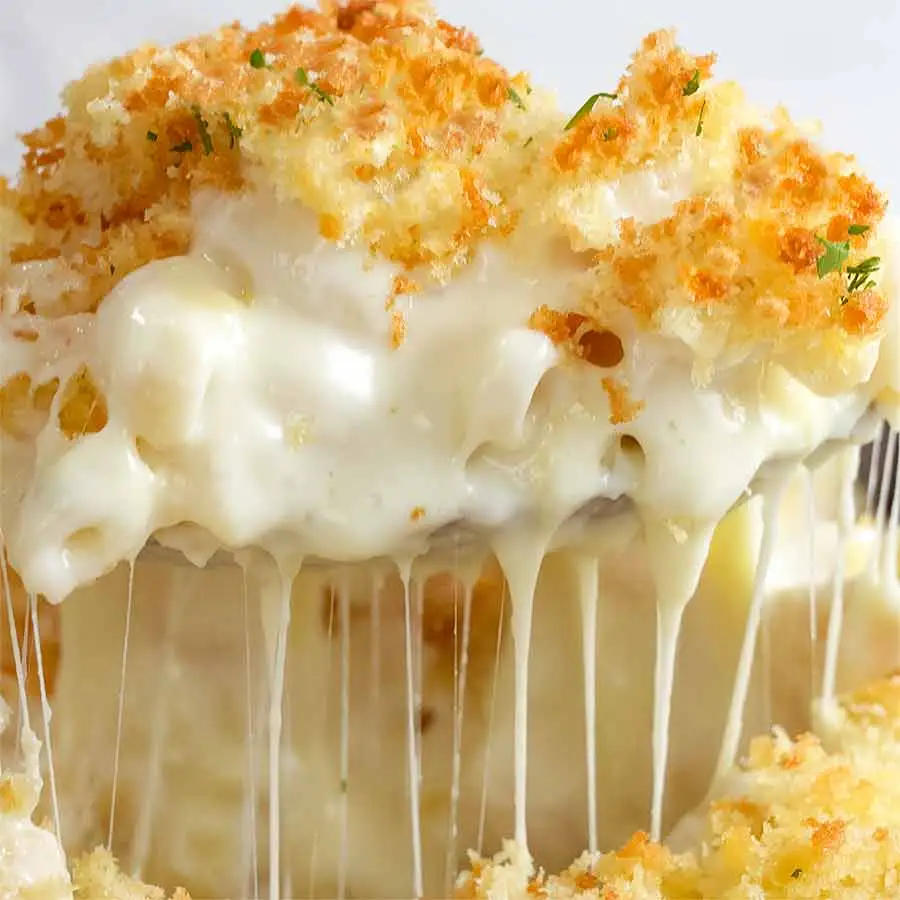

Homemade Mac and Cheese

Description:
This mac and cheese recipe with a buttered bread crumb topping is creamy and comforting. It's easy to make the cheese sauce from scratch on your stovetop, starting with a roux and adding milk, Cheddar, and Parmesan, resulting in a rich, decadent sauce that coats every nook and cranny of the noodles.
Ingredients:
- Macaroni: a box of uncooked noodles.
- Butter and Flour: to make a roux for the cheese sauce.
- Milk: whole milk for the richest flavor and texture.
- Cheese: Cheddar and Parmesan cheeses.
- Seasonings: Salt, Pepper, and Paprika for topping.
- Bread Crumbs: Store-bought crumbs for some crunch.
Steps:
- Boil the noodles, drain, and transfer to a prepared baking dish.
- Make the cheese sauce, pour the sauce over the noodles, and stir together.
- Make the topping, spread it over the macaroni and cheese, and sprinkle with paprika.
- Bake the mac and cheese until topping is golden brown.